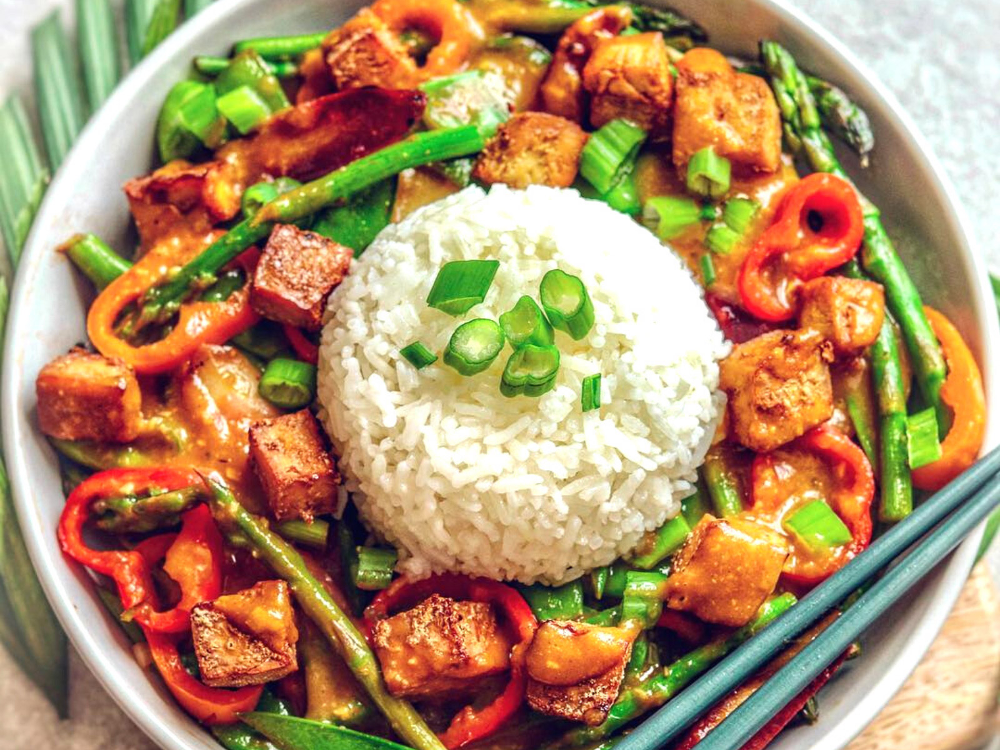

Crispy Tofu with vegetables Recipe

Simple dish is deliciously tasty and definitely worth the slighty longer time you may be
waitng for your dinner. The tofu can easily be switched out for any other protein source and so can
the vegetables for anything you may have in the fridge.
Ingredients list
For the Tofu:
- 100 ml vegetable oil
- 450g Firm Tofu
- 100g Corn flour
- 1 tsp Sashimi
- 1 tsp MSG
- 1 tsp curry powder
- 1/2 tsp salt
- Pepper to taste
- 1 egg
- Panko Breadcrumbs
For the Sauce:
- 3 tbps honey
- Light & Dark Soy Sauce
- 1 tbsp Chinese Vinegar
- 1 tsp MSG
- 1 tsp Chilli Flakes
- 1 tsp Seasame seeds
- Siricha to taste
- Seasame Oil
Additions:
- 200g Basmati Rice
- Vegetable pack or any spare vegetables in the fridge
Method:
- In a bowl combine the corn flour and the dry seasonings.
- In a seperate bowl, crack the egg and whisk together to make an egg wash.
- Into another bowl place the panko breadcrumbs so that there are three seperate bowls
ready for dipping.
- Cut the tofu up into small cubes and dunk them into the egg wash, then into the corn flour. Again dunk the tofu back
into the egg wash and now place into the panko breadcrumbs making sure all the cubes are fullly coated.
- Before frying the tofu, wash your rice three times and add enough water so that the distance of your thumb from the top
of the rice to the first knuckle on your finger shows the water level. Then allow to reach a boil and turn down to low heat,
once it boils over, leaving to cook for 10 mins.
- Then take a wok or pot and shallow fry the tofu until the breadcrumbs become golden and crispy. Set aside once done.
- Dispose of the oil in the wok and keep some to stir fry the vegetables for 3 minutes. Once completed, set aside so that
the sauce can be made in the wok.
- To the wok, add the honey, soy sauce and chinese vinegar, allowing the mizture to come together and thicken slightly
by leaving on the heat for 1 min.
- Once thickened, add the dry seasonings - msg, chilli flakes and seasame seeds. At this point you can also add the Sriracha
and seasame oil.
- If the sauce is too thin at this point, then allow to reduce. If it is too thick then use a little water to smooth
out the sauce.
- Once the sauce is to the consistency of your liking, add back in the Tofu and vegetables and toss to coat them all in the
sauce.
- Serve with any garnishes of your liking and the rice.